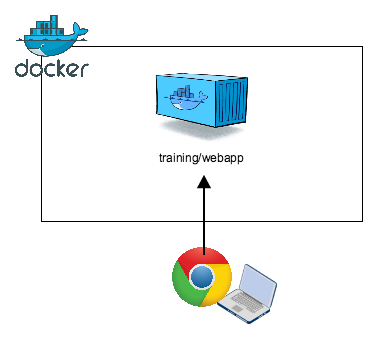
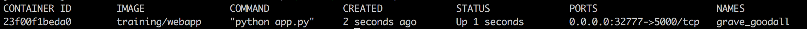
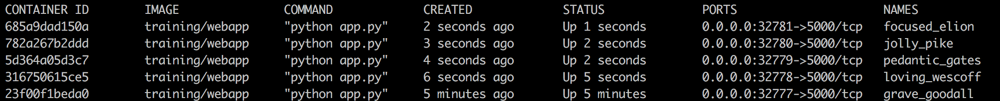
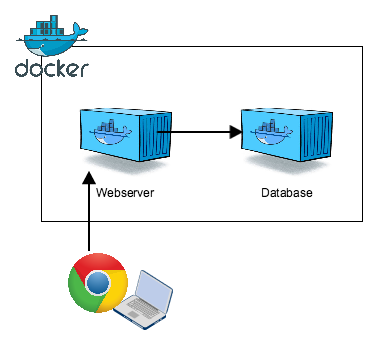
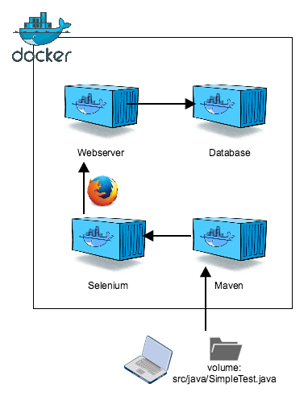

Docker for testers
The purpose of this training is to learn how to use Docker on your local machine.
After finishing the training you will know how to:
-
Start and stop containers
-
Build your own images
-
Run your own test database with test data
-
Run your own Selenium Grid for web testing
The training is structured as follows: first theory, followed by practice, with every step building on the previous step.
| You can find the slides of the presentation on Google Drive |
1. Installation instructions
In order to do this workshop you need to install Docker Community Edition on your machine. We recommend you install the stable edition.
1.1. Mac
Please install Docker Community Edition for Mac. You can find the download link on: https://store.docker.com/editions/community/docker-ce-desktop-mac
1.2. Windows
Choose the correct Docker installation based on your Windows version.
-
Windows 8 or earlier
-
Install Docker Toolbox from https://www.docker.com/products/docker-toolbox
-
-
Windows 10 Home edition
-
Install Docker Toolbox from https://www.docker.com/products/docker-toolbox
-
-
Windows 10 Professional or Enterprise 64-bit
-
Install Docker Community Edition for Windows from https://store.docker.com/editions/community/docker-ce-desktop-windows
-
After the installation is complete, continue with the first exercise to verify that your setup is running correctly.
|
Hardware Virtualization disabled If you encounter the message "VT-x/AMD-v has to be enabled", please enable "Intel Virtualization" in the BIOS of your system. This is required for running virtual machines. Detailed instructions can be found here under "Access the BIOS or UEFI Firmware". |
1.3. Download the zip
Exercises
2. Hello World!
Let’s get started!
Let’s begin with verifying that your Docker setup is correct and that you can issue commands.
docker run hello-world
This should show you a Hello from Docker! message and additional details on what happened under the hood.
Let’s have a closer look at what the command we’ve just run actually means.
<docker> <run> <hello-world> 1: docker command itself 2: the run instruction we've given to docker to start a container from an image (try running docker run --help) 3: the name of the docker image you want to run (hello-world)
3. Running Docker containers

This assignment focuses on the Docker commands necessary to start, stop and inspect containers.
We will use a Docker image published on the Docker Hub to start a small web server that serves a single "Hello World!"-page.
docker run -d -P training/webapp python app.py
This runs the training/webapp-image in detached (-d) mode, exposing all ports (-P), calling python inside the container with one argument app.py, which is a script inside the container.
docker ps -l

Go to http://localhost:32769 (the port number left of the -> in the docker ps command output)
The site should say Hello world!.
If you are using the Docker Toolbox, you have to go to http://<docker ip>:<port> instead. Run docker-machine ip default to find the IP. Run docker-machine ls to find out the name of your Docker Machine.
|
3.1. Inspecting the logs
After you’ve seen the Hello world-message you might want to inspect the logs of the docker container with the logs command.
docker logs <container id or name>
You should see GET commands on the root (/) of your webserver.
3.2. Passing environment variables to a container
A lot of containers are configurable using environment variables that you can pass in at startup with the -e flag.
We’ll use the container’s PROVIDER environment variable to pass in your name so it will be shown when you visit the website.
| Environment variables are a set of dynamic, named values that can affect the way running processes will behave on a computer. They are part of the environment in which a process runs. Wikipedia |
docker run -d -P -e PROVIDER="Your name" training/webapp python app.py
Find out the port for this new container using the command below and visit it again to see your name displayed.
docker port <container id returned by previous docker run command> 5000
3.3. Run more containers
docker psdocker run -d -P training/webapp python app.py docker ps
Notice that every container has a different port assigned on the host, but all map to 5000 port on the container. This is handled by the -P parameter.
-P, --publish-all Publish all exposed ports to random ports
Of course, at times you may want to have more control over the ports you are running on.
Figure out how to start another training/webapp container mapping a specific port (80) to the exposed port of the container (5000).
Afterwards you should be able to see the Hello-message on http://localhost:80.
Start by checking the documentation of the run command or execute: docker run --help. Also figure out what the -d parameter is doing by checking the documentation.
|
4. Managing containers
After exercise 1 and 2 we have a number of containers running, which we will probably want to stop at some point in time. Let’s practice that now.
First we have to figure out which containers are currently running with docker ps.
4.1. Stopping containers
docker ps

You can stop a single container by running docker stop followed by the container id or name.
docker stop a557431a5588
You can also specify and stop multiple containers.
docker stop a557431a5588 clever_fermi
Of course, you might also want to stop all containers at once. We can do this by passing the output of the ps command to the stop command.
docker ps -a -q
Run docker ps --help to find out what the -a and -q flags do. You might have noticed this is exactly the output we need to feed to the stop command
Linux/Mac OS X/Windows (Cygwin)
docker stop $(docker ps -a -q)
Windows (DOS Prompt)
FOR /f "tokens=*" %i IN ('docker ps -a -q') DO docker stop %i
If you now run docker ps the list of containers should be empty.
4.2. Removing containers
Now that we’ve stopped all the containers we can also remove them. Let’s see how many stopped containers we have on our system by running docker ps -a.
docker ps -a
You can remove a container by running docker rm followed by its container id or name.
docker rm big_newton
Of course, in this case we’d rather remove all containers at once
Linux/Mac OS X/Windows (Cygwin)
docker rm $(docker ps -a -q)
Windows (DOS Prompt)
FOR /f "tokens=*" %i IN ('docker ps -a -q') DO docker rm %i
If you now list all stopped containers again, docker ps -a, no containers should be returned.This does not mean that the images are no longer available, as you can see by running docker images. We’ve only removed the containers which are, in essence, instances of the images available on your system.
5. Building images
Running pre-made images is very useful and can save you a lot of time, but at some point you will want to create your own images.
The training/webapp image is limited in that it can only say "Hello World" or "Hello Your Name", let’s see if we can expand on the original image to display a value stored in a Postgres database.
5.1. What do we need to change?
In order to add the ability to connect to a database we have to change a number of things:
-
Expand the original image
-
Add Python dependencies to enable connections to a Postgres database
-
Replace the original Python application with our version
-
-
Setup a docker network
-
Run a database with data
-
Run a Postgres database image
-
Add our data to the running database
-
-
Run the newly built image
-
Display the data from the database on the webpage
-
The following sections will discuss all these steps one-by-one.
5.2. Changes to the image
In order to build a Docker image yourself you need a Dockerfile. In this case we will supply you with the Dockerfile necessary to create the image. But you will have to run the build process yourself to make the image available to your Docker daemon.
-
Download the workshop zip file and unzip it on your local harddisk
-
Go to
docker-images/webserverfolder -
Review the Dockerfile to understand what we are building
[a] FROM training/webapp [b] RUN apt-get -y update && apt-get -y install libpq-dev python-dev RUN pip install pygresql [c] ADD app.py /opt/webapp/app.py-
We use the
training/webappimage as a base-image -
We run 2 commands inside the container to install python and pygresql (a library that lets python code talk to PostgreSQL)
-
We overwrite the existing
app.pyfile with our newapp.pyfile that will check the database.
-
5.3. Building the new image
We now have to instruct Docker to pickup the Dockerfile and build it with the tag webserver.
Make sure your working directory is docker-images/webserver
|
docker build -t webserver .
Read the documentation of the build command: docker build --help
|
5.4. Setup a docker network
If we want docker containers to be able to reach each other, we need to setup a docker container network. To create a docker network called "training" we need to run the following command:
docker network create training
| A Docker network automatically allows Docker containers to reach each other by container name, as long as they are part of the same network. This works via the DNS server on the Docker daemon. |
5.5. Starting the new image
Before we start a container with the webserver image we first need to start a Postgres database that will store our data for us.
Luckily, we can use an off-the-shelf image provided by Postgres.
docker run --rm --network training --name database -e POSTGRES_PASSWORD=testnet -d postgres
Use the following command to inspect the docker container network:
docker network inspect training
5.6. Add data to the database
Because you may not have a Postgres database client installed we start another container from the Postgres image to connect to the previously started container. From there we can add some data to the database to display on the webpage.
docker run -it --rm --network training postgres psql -h database -U postgres
This starts a new instance of the postgres image in interactive mode (-it), removes it after stopping the container (--rm), makes it part of the training-network and executes psql -h database -U postgres inside the container in order to connect to the running database container.
CREATE DATABASE testnet;
\c testnet
CREATE TABLE kv (key varchar(100) PRIMARY KEY, value varchar(100));
INSERT INTO kv VALUES ('provider','testnet on pg');
SELECT * FROM kv; -- Check that the data is really there
\q
5.7. Run the newly built webserver image
docker run -it --rm --network training --name webserver -p 5000:5000 webserver
In foreground mode (the default when -d is not specified), docker run can start the process in the container and attach the console to the process’s standard input, output, and standard error. It can even pretend to be a TTY (this is what most command line executables expect) and pass along signals.
For interactive processes (like a shell), you must use -i -t together in order to allocate a tty for the container process. -i -t is often written -it.
|
|
Error on Windows:
On Windows/GIT Bash/Cygwin you may get the following error the input device is not a TTY.the input device is not a TTY. If you are using mintty, try prefixing the command with 'winpty'.
Run the command again with winpty in front of it. Refer to this page for details.
|
6. Running your database with data included
Having to insert the data every time you start a container can become a hassle. In this exercise we will create our own version of the Postgres image and bake our data into it. That way the data will always be available on startup.
The Postgres image provides a convenient way to execute scripts on startup of your database. All we have to do is add a .sh script to the docker-entrypoint-initdb.d-folder as per the documentation of the image.
| If you still have containers running, please stop them now. |
6.1. Build & run the image

Follow the steps below to create your own version of the Postgres image, including the files necessary to create the data we will access from the webserver.
-
Create an empty folder
-
Save the shell script below in that folder as
create.sh
-
#!/bin/bash
set -e
psql -v ON_ERROR_STOP=1 --username "$POSTGRES_USER" <<-EOSQL
CREATE DATABASE testnet;
\c testnet
CREATE TABLE kv (key varchar(100) PRIMARY KEY, value varchar(100));
INSERT INTO kv VALUES ('provider','Now getting data from Postgres!');
EOSQL
-
Create a
Dockerfilein the folder that -
Build the image as
databaseand run it as part of the training network -
Run a
webservercontainer and make it part of the training network
You should see the message 'Now getting data from Postgres!' if you visit the web app.
| On Windows you may have to run dos2unix on your .sh file before you can build the image. This will fix the line-endings in the script and allow it to be executed by the database image. Alternatively you can open the .sh file in Notepad++ and change the line endings to UNIX style. |
7. Checking whether the webpage is displayed correctly
Spinning up your own Selenium containers can be convenient if you want to test a site with a specific browser and don’t want to bother with configuration of machines.
In this exercise we will run our webserver and verify that the displayed page has the correct content, using a browser supplied by Selenium.
7.1. Preparing the test environment

For the automated check to succeed we need to create the following situation:
-
The
databasecontainer is running and has data -
webserveris able to connect to thedatabase -
Selenium grid is running
-
The Java environment to execute the tests will be provided by a Docker container too
7.2. Starting the selenium server
Assuming you have the database and webserver containers running, start the Selenium server by executing:
docker run --rm --name selenium -d --network training -p 4444:4444 -p 5900:5900 selenium/standalone-firefox-debug
7.3. Connect with VNC
In order to monitor test progress we can connect with VNC viewer to the Selenium node after we’ve started it.
The VNC server is listening on port 5900, the password is secret.
7.4. Adjust SimpleTest
We’ve prepared a simple Java project to test whether the webserver displays the correct message.
Adjust the message you added to the database in the SimpleTest.java file. This file can be found inside the selenium-grid-docker directory.
7.5. Execute your test
We will use the official Maven image (maven:3.3.9-jdk-8-alpine) to build and execute our test.
This image provides a Java environment and Maven (a Java build tool) to execute the project. In order to make the project files, which are on your local machine, available to the container we will mount the selenium-grid-docker directory as a volume for the container.
Make sure that your command prompt is in the selenium-grid-docker directory.
|
docker run -it --rm --name my-maven-project --network training -v "$PWD":/usr/src/mymaven -w /usr/src/mymaven maven:3.3.9-jdk-8-alpine mvn clean install
7.5.1. Additional Windows/Docker toolbox details
On Windows/GIT Bash/Cygwin you may get the following error the input device is not a TTY. If you are using mintty, try prefixing the command with 'winpty'.
Run the command again with winpty in front of it. Refer to this page for details.
|
| Before we can mount a volume on Windows when using Docker Machine we need to make a shared folder in Virtual Box first. See step 3 of this page. |
7.6. Considerations
What are the implications of the `-v` flag in the command?
8. Additional assignments
The following assignments are extra. They give less information upfront and you’ll have to investigate a bit yourself.
8.1. Run a Selenium Hub with nodes for Firefox and Chrome
In assignment 06 we used a single container, but often you will want to test your application in multiple browsers. Figure out which containers you need and how to adjust the SimpleTest class to use a different browser.
8.2. Run the webserver with a different type of database
See if you can adjust the Python script in the webserver container to talk to a different type of database, such as Oracle XE.
9. Appendix
9.1. Dealing with named containers
You can start named containers by adding --name your_name to any docker run command. If you try to start a new instance of a container with that same name you will get an error message.
docker: Error response from daemon: Conflict. The name "/pg" is already in use by container. You have to remove (or rename) that container to be able to reuse that name..
This is easily resolved by running
docker rm -f <container_name>